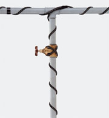

CCSRJ
Self regulating water pipe freeze protection cable
Application
CCSRJ cables are designed to prevent water pipes from freezing. They should be installed directly onto the pipe under a layer of insulation. The output of a self regulating cable will automatically adjust to suit the prevailing conditions. The cable can be cut and terminated to length, T jointed and spliced for more complex installations and overlapped without fear of overheating.
Features
- 3 wattage outputs available
- Can be overlapped to protect valves, flanges etc
- Metal earth braid running full length of the cable
- Fully moisture proof
- Easy to handle 75m dispensing box
Specification
| Model | Maximum
Output (W/m at 10°C) |
Volts | Length (m) |
Maximum Circuit Length(m) |
|---|---|---|---|---|
| CCSRJ-10 | 10 | 230 | 75 | 164 |
| CCSRJ-15 | 15 | 230 | 75 | 140 |
| CCSRJ-24 | 24 | 230 | 75 | 106 |
CCSRJ Selection Table 1
| Pipe Dia.(mm) |
Insulation Thickness(mm) | ||
|---|---|---|---|
| 12 | 25 | 50 | |
| 12 | CCSRJ-10 Straight | CCSRJ-10 Straight | CCSRJ-10 Straight |
| 25 | CCSRJ-15 Straight | CCSRJ-10 Straight | CCSRJ-10 Straight |
| 50 | CCSRJ-24 Straight | CCSRJ-10 Straight | CCSRJ-10 Straight |
| 75 |
CCSRJ-24 1.3m cable / 1m pipe |
CCSRJ-24 Straight | CCSRJ-10 Straight |
| 100 | CCSRJ-24 1.8m cable / 1m pipe |
CCSRJ-24 Straight | CCSRJ-15 Straight |
| 150 | CCSRJ-24 3m cable / 1m pipe |
CCSRJ-24 1.4m cable / 1m pipe |
CCSRJ-15 1.2m cable / 1m pipe |
CCSRJ Selection Table 2
Additional length in metres
| Pipe
Dia. (mm) |
Pair of Flanges |
Valve | Support |
|---|---|---|---|
| 12 | 0.23 | 0.10 | 0.10 |
| 25 | 0.28 | 0.15 | 0.10 |
| 50 | 0.30 | 0.30 | 0.15 |
| 75 | 0.45 | 0.40 | 0.15 |
| 100 | 0.60 | 0.50 | 0.20 |
| 150 | 0.80 | 0.60 | 0.25 |
Options
- Cable cut to length and supplied by the metre (30m max) add suffix ‘-CL’
- Termination kit - single. Ref. CCSRJ-T1
- Termination kit - pack of 5. Ref. CCSRJ-T5
- Splice kit. Ref. CCSRJ-S
- Aluminium tape to dissipate heat when installing on plastic pipes (50m roll). Ref. AL-50
- Caution labels (pack of 10). Ref. 0010-007
- Frost thermostat - indoor use. Ref. FST-IN
- Frost thermostat - IP65. Ref. FST-EX